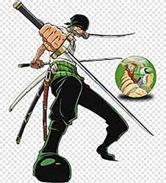

Monkey D. Luffy, also known as "Straw Hat" Luffy, is a fictional character and the main protagonist of the One Piece manga series, created by Eiichiro Oda. Luffy made his debut in One Piece Chapter #1 as a young boy who acquires the properties of rubber after accidentally eating the supernatural Gum-Gum Fruit.
Roronoa Zoro, nicknamed "Pirate Hunter" Zoro, is a fictional character in the One Piece franchise created by Eiichiro Oda. In the story, Pirate Hunter Zoro is the first to join Monkey D. Luffy after he is saved from being executed at the Marine Base.

Namiis a fictional character in the One Piece franchise created by Eiichiro Oda. She is based on Ann and Silk, two characters from Oda's previous manga Romance Dawn. She is introduced as a thief and pickpocket who possesses cartographical, meteorological and navigational skills.